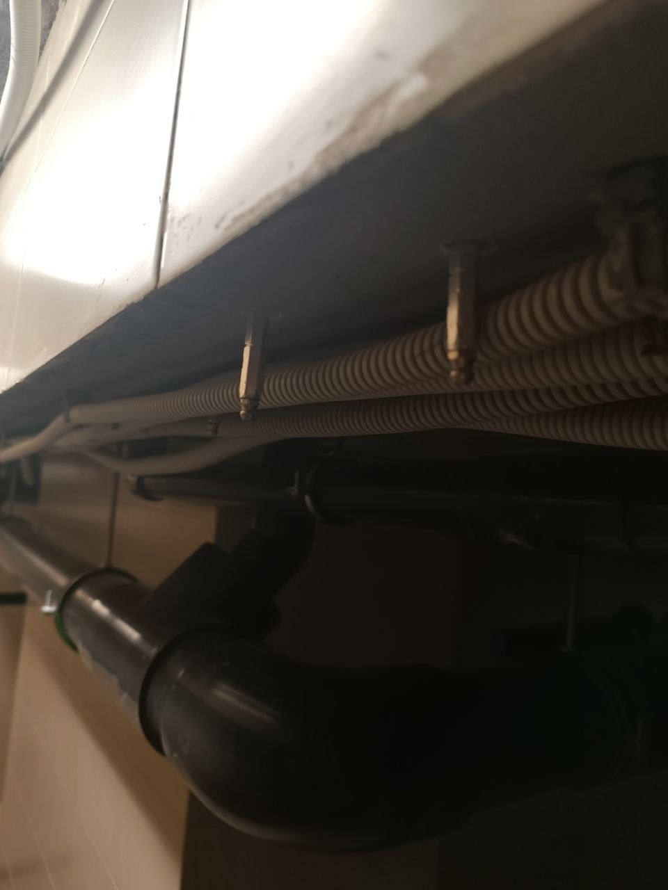

Что может объяснить снижение уровня воды
Снижение уровня воды не всегда означает повреждение чаши. На наблюдение влияют испарение, брызги, слив при обслуживании и режим работы переливной системы.
Если потеря повторяется, сначала зафиксируйте её при сопоставимых условиях. Отметьте уровень, время, погоду, работу оборудования и любые операции со сливом или доливом воды.
Влажные участки, падение уровня и частые доливы — повод для проверки, но не готовый диагноз. Причина может быть в чаше, закладном элементе или трубопроводе.
Эта статья посвящена первичной диагностике. Выбор системы гидроизоляции и её устройство разобраны отдельно в материале о гидроизоляции чаши бассейна.
Ремонт выбирают после локализации причины и проверки конструкции. Универсальный способ устранения протечки без осмотра назначить нельзя.

Как проверить, есть ли утечка
Начните с журнала наблюдений: когда и насколько меняется уровень, доливали ли воду, работала ли фильтрация и выполнялись ли промывка или обслуживание.
Сравнительный тест с контрольной ёмкостью может помочь учесть испарение, но он не определяет место утечки и не заменяет осмотр. Проведите наблюдение в одинаковых условиях и фиксируйте результат.
Порядок первичной проверки:
-
Соберите исходные данные
Запишите уровень воды, дату и условия наблюдения, доливы и операции обслуживания. Сравнивайте результаты только за сопоставимые периоды. -
Проведите визуальный и инструментальный осмотр
Осмотрите доступные участки чаши, швы, форсунки, скиммеры и соединения на следы влаги. Отсутствие видимых дефектов не исключает скрытую утечку. -
Определите зоны риска
Отметьте, меняется ли потеря воды при обычном включении циркуляции. Не переключайте арматуру вне штатной схемы и не проводите испытания давлением самостоятельно. -
Составьте план работ и приоритеты
Если простая проверка не объясняет потерю, передайте специалисту схему труб, описание режима и журнал наблюдений. Это помогает выбрать дальнейший диагностический метод. -
Проверьте результат
Давление в отдельных линиях, поиск скрытых утечек и решение о вскрытии отделки требуют подходящего оборудования и оценки специалиста.
По итогам проверки фиксируют вероятную зону и следующий шаг. Сам тест уровня не подтверждает ни конкретное место, ни причину потери воды.

Что происходит после первичной проверки
Если наблюдения указывают на утечку, специалист сопоставляет их со схемой бассейна и проверяет вероятные зоны. Метод зависит от того, проявляется ли потеря при остановленной или работающей циркуляции.
| Этап | Как правильно делать | Частая ошибка |
|---|---|---|
| Диагностика | Сверяют журнал уровня, осматривают доступные элементы и по необходимости проверяют отдельные участки системы профильным оборудованием. | Считать трещину или влажное пятно доказанной причиной без проверки других возможных путей потери воды. |
| Выбор решения | Сначала устанавливают предполагаемый источник и конструкцию узла, затем рассматривают ремонт совместимых материалов по проекту и документации системы. | Назначать инъекцию, герметик или вскрытие только по фотографии, не выяснив, откуда поступает вода. |
| Выполнение работ | Выполняют согласованный ремонт и контроль по инструкции применённых материалов и условиям проекта. | Заполнять чашу или запускать систему до выдержки и проверок, предписанных документацией выбранного продукта. |
Устранение видимого следа влаги не гарантирует, что источник найден. Результат оценивают по заранее согласованному критерию контроля и условиям эксплуатации.
FAQ — ответы на частые вопросы по гидроизоляции и протечкам
Ниже собраны практические ответы на вопросы, которые чаще всего возникают у владельцев бассейнов при появлении протечек или проблем с гидроизоляцией.
С чего начать поиск причины протечки?
Сначала зафиксируйте изменение уровня при сопоставимых условиях и осмотрите доступные узлы чаши и оборудования. Это помогает сузить область поиска, но не устанавливает место повреждения; трубы и конструкцию при необходимости проверяет специалист.
Всегда ли нужно сливать бассейн для проверки?
Не всегда. Решение зависит от предполагаемого места утечки, конструкции чаши, уровня грунтовых вод и метода диагностики. Не опорожняйте бассейн по общему совету: допустимость операции проверяют по проекту или со специалистом.
Нужно ли полностью сливать бассейн?
Решение зависит от места и способа ремонта, конструкции чаши и уровня грунтовых вод. Не сливайте бассейн по общему совету: порядок и допустимость опорожнения нужно сверить с проектом или специалистом.
Можно ли определить место протечки без вскрытия отделки?
Иногда вероятный участок удаётся сузить по наблюдениям за уровнем, осмотру доступных узлов и проверке трубопроводов. Результат не всегда даёт точку повреждения; испытания линий и решение о вскрытии должен определять специалист.
Что чаще всего вызывает протечки?
Возможные источники — чаша и её швы, закладные детали, соединения труб или оборудование. Внешний след влаги не всегда показывает, где именно теряется вода; сначала сопоставляют наблюдения со схемой системы.
Когда лучше начинать ремонт гидроизоляции?
Проверку разумно начать, когда снижение уровня повторяется при сопоставимых условиях или появляются влажные участки. До определения источника не выбирайте материал или способ ремонта только по внешнему виду дефекта.
Получить консультацию и смету
Оставьте заявку: подготовим решение под ваш объект, сроки и бюджет.